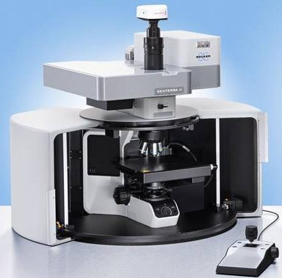
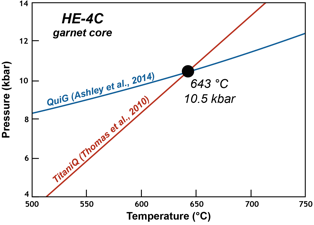
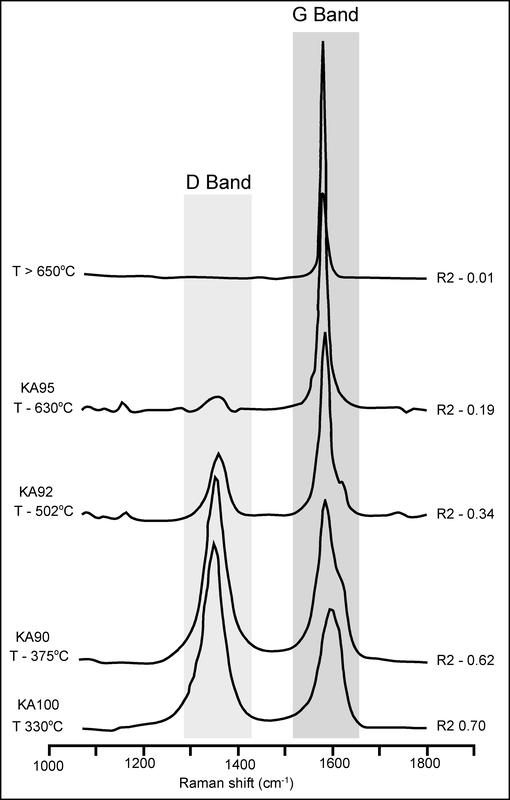

Facilities
Raman Laser Spectroscopy
UCSB Earth Science operates a Bruker Senterra Raman Laser Microscope. The system includes:
- 532nm and 785nm lasers
- 1200 lines/mm & 4000 lines/mm gratings for both lasers
- Spectral resolution of 3 cm-1.
- Reflected Light, Polarized Light and Fixed Analyzer
- 100x Objective
- automatic calibration of the wavelength axis using built-in neon lamp

This instrument is primarily used for a range of thermobarometric and structural measurements, including:
- Quartz-inclusion barometry,
- Raman Spectroscopy of Carbonaceous Material (RSCM)
- thermometry (utilizing the reference standards and data
- reduction protocols developed by Lünsdorf et al., (2017)
- Assessment of radiation damage in accessory minerals
- such as zircon
- rapid mineral identification

Example of combining quartz-in-garnet (QuiG) barometry (measured by Raman) with titanium-in-quartz thermometry (via EPMA) from a Himalayan schist. Figure from Johnson et al., (2021).

Examples of Raman Spectra obtained from the South Tibetan Detachment zone. Position of the graphite G band and D group defect bands are indicated. For each spectrum, the value of the mean R2 ratio (R2 = D1/[G + D1 + D2] peak area ratio) obtained after 10 decompositions is given. Figure from Cottle et al., (2011).